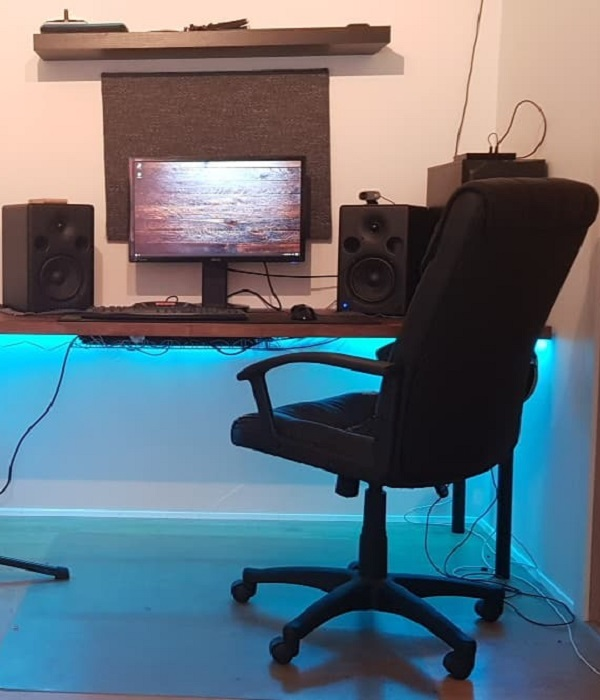
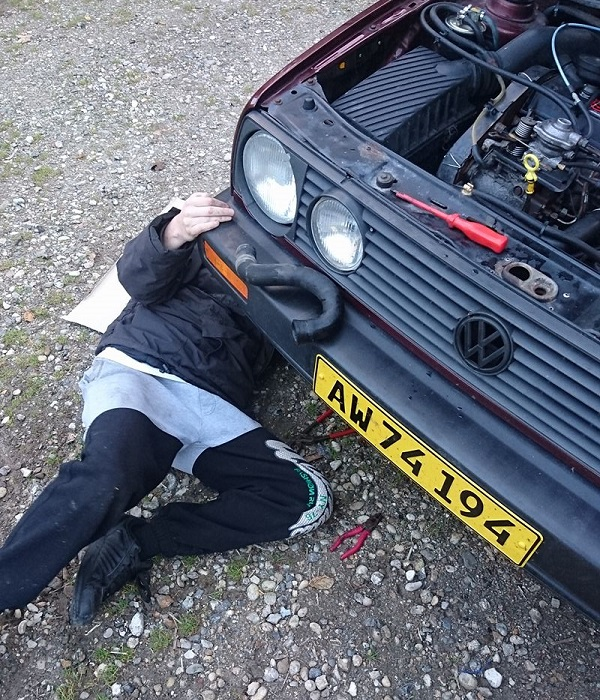
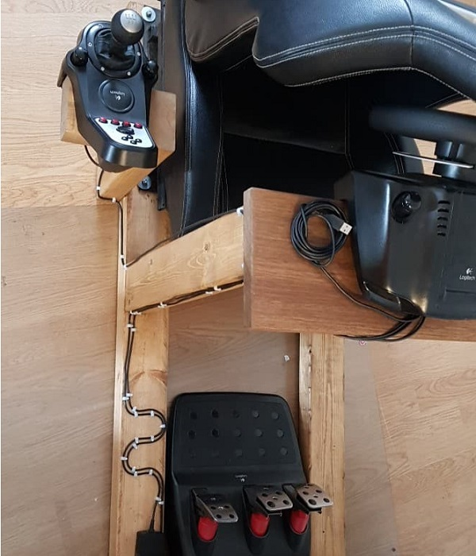

Jeg bruger en tonsvis af tid på min computer, hvor jeg laver alt fra at spille til at se mest af mine nyheder og serier.
Når jeg ikke sidder inden for og vejret tilader det, så roder jeg på mine forskellige gamle biler jeg har stående og den jeg kører i.
De to interesser bliver selvfølgelig kombineret til at jeg kan lide at spille bil spil, og har lavet min lille DIY sæde og stativ til det.
